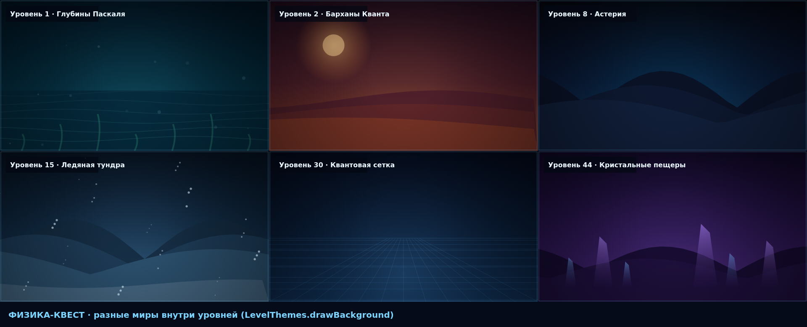
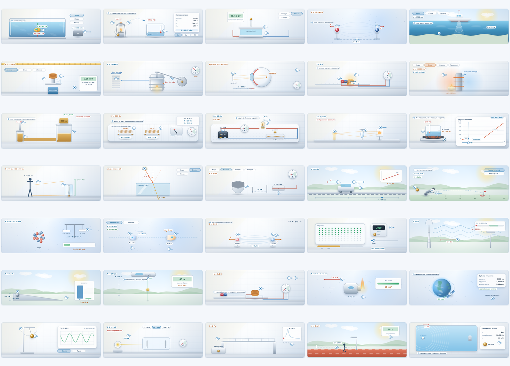
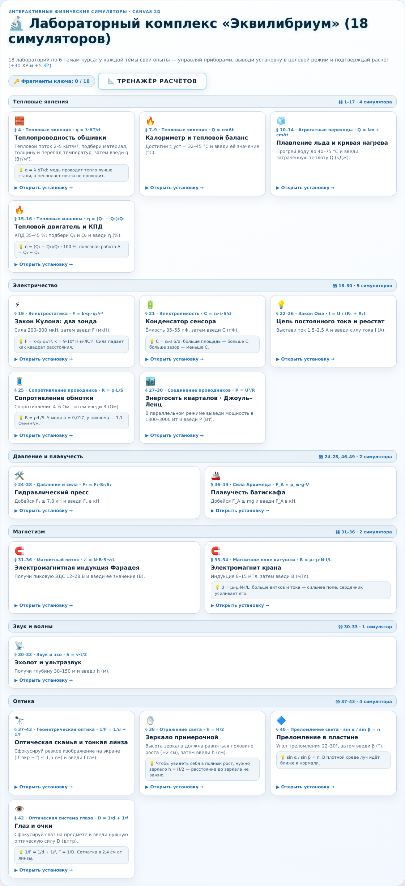
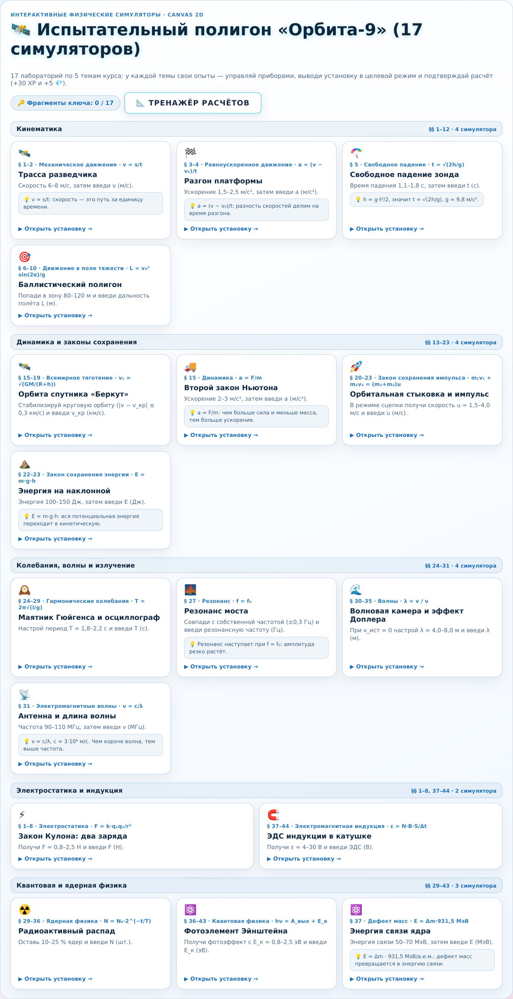
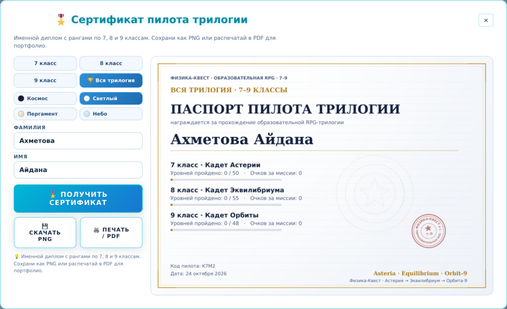

50 симуляторов внутри игры: 15 полевых опытов для 7 класса и 35 canvas-лабораторий для 8 и 9 классов — каждая тема курса (§§ 1–43) получила свой опыт. Меняй параметры, следи за телеметрией, выводи установку в целевой режим и вводи расчётное значение. Ниже — все 50 кадров.
Фон уровня больше не один и тот же: каждая глава получает свой мир — небо, силуэты, частицы и свечение. Ниже — реальные кадры фонов, которые рисует движок.


Как и в 7 классе, лаборатории сгруппированы по темам курса: у каждой темы свой набор опытов и своя карточка с параграфом, целью и подсказкой. Ниже — реальные экраны галереи 8 и 9 класса.


На каждом лабораторном уровне 8 и 9 класса открывается своя мини-игра: приборы со слайдерами или сборка электрической цепи. Нужно вывести установку в целевой режим, увидеть зелёный результат и подтвердить расчёт — за это уровень даёт бонус. Ниже — реальные экраны всех 15 мини-игр: 11 в 8 классе (уровни 45–55) и 4 в 9 классе (уровни 45–48), каждая с формулой и целевым значением.
Сертификат за любой класс и за всю трилогию: имя и фамилия вводятся отдельно, внизу — код пилота, дата и круглая печать с номером класса. Четыре оформления: «Космос» — тёмный сгенерированный фон, «Светлый», «Пергамент» и «Небо» — рисуются кодом на белом фоне и печатаются на обычной бумаге без тёмной заливки. Выбор оформления запоминается.
Так выглядит окно выбора: вкладки класса, плитки оформления, отдельные поля «Фамилия» и «Имя», скачивание в PNG и печать в PDF.

Отдельный набор опытов для 7 класса: измерения, плотность, давление, Архимед, рычаг и энергия. Полностью на трёх языках.